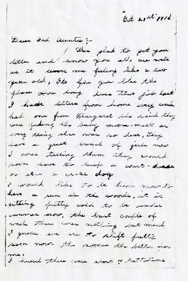
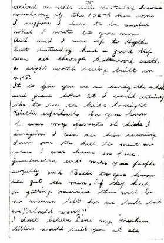
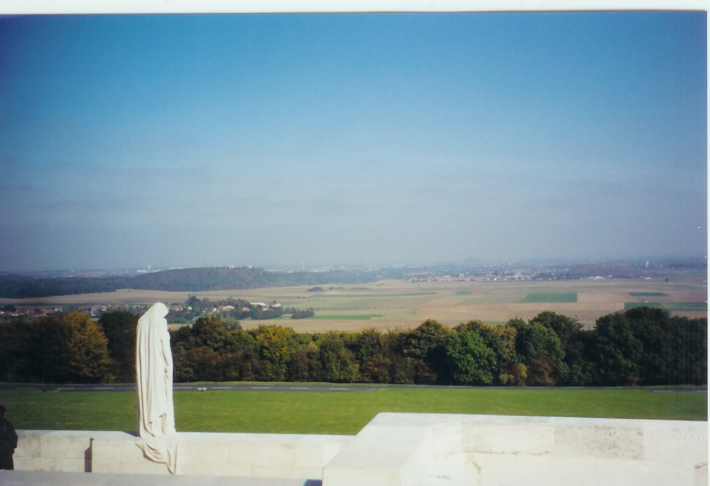
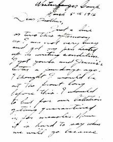
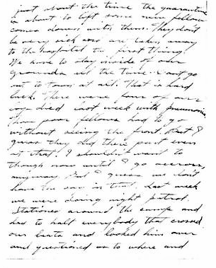
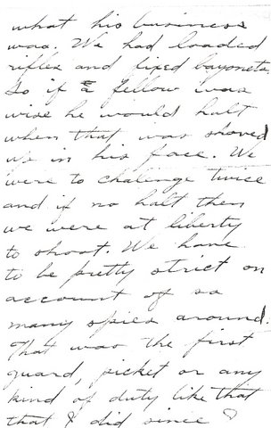

The Family Chronicle
No. 186 April 7, 2010
____________________________________________________________________
WW1 Letters


Letter dated October 21, 1916 sent to Jane (Watling) Glendenning; although signature is missing, I am sure that it was written by her nephew, Jimmie Adams
Don taken at Vimy Ridge

Looking over the “German” side from Vimy ridge
Letter below was written by Guy Glendenning to his brother, Elmer. Guy was a machine gunner, was wounded three times, and lost a leg just before the war ended.



The Family Chronicle (Copyright) is an occasional newsletter published by Don Glendenning and posted on the family website. It is intended to share information about my family, community and the times in which I grew up. While every effort is made to be accurate, errors are likely to occur. Comments, enquiries and information may be sent to 62 Queen Elizabeth Drive, Charlottetown, PEI, C1A 3A9. Tel: 902 892 5859. Email: don@glendenning.net Web: www.glendenning.net/don
Download Original